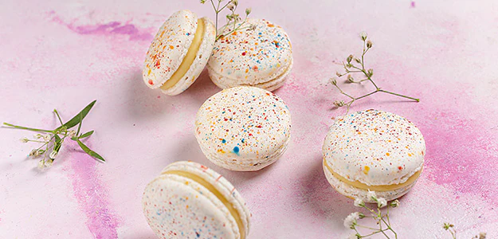

Thandai Macaron

Description:
The very thought of soul-soothing drinks instantly remind us of Thandai. Here we bring you a modern and unique twist to the the Thandai recipe.
Ingridents
- 120 gram Castor Sugar
- 90 gram Almond Powder
- 80 gram Icing Sugar
- 50 gram Egg white
- 200 gram Melted White Chocolate
- 100 gram Thandai mix
- 30 gram Butter
Steps
- Sieve the icing sugar, add almond powder in a large mixing bowl.
- In a separate bowl, whisk egg whites until they form soft peaks. Add castor sugar little at a time and continue to whisk until the mixture is thick. Gently stir in the icing sugar and almond mixture.
- Use a piping bag with a nozzle, fill with the macaron mixture. Place the silicon mate or a paper template onto a baking sheet. Pipe small rounds onto the sheet.
- Gently tap the baking sheet few times on the work surface to break any air bubbles then leave it to dry for 20 minutes.
- Bake the macaron at 130 degrees for 24 minutes.
- Do not remove the macarons until they are cold or you will break them.
- Beat the butter until its softened and fluffy. Add white chocolate and thandai flavour and mix it well.
- Place approximately half a table spoon of the filling on the flat side of macaron and sandwich together.
- Before serving refrigerate the macarons for a couple of hours.